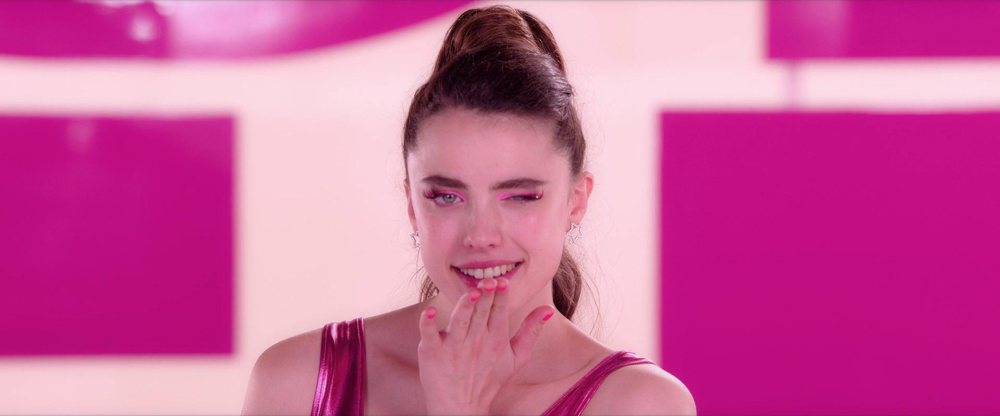

The Substance

Em A Substância, Elisabeth Sparkle (Demi Moore) é uma celebridade em declínio que enfrenta uma reviravolta inesperada ao ser demitida de seu programa fitness na televisão. Desesperada por um novo começo, ela decide experimentar uma droga do mercado clandestino que promete replicar suas células, criando temporariamente uma versão mais jovem e aprimorada de si mesma. Agora, a atriz se vê dividida entre suas duas versões (Margaret Qualley), que devem coexistir enquanto navegam pelos desafios da fama e da identidade. "Já sonhou com uma versão melhor de si mesmo? Você. Só que melhor em todos os sentidos. De verdade. Você precisa experimentar este novo produto, A Substância. MUDOU A MINHA VIDA. Ele gera outro você. Um você novo, mais jovem, mais bonito, mais perfeito. E há apenas uma regra: vocês dividem o tempo. Uma semana para você. Uma semana para o novo você. Sete dias para cada um. Um equilíbrio perfeito. Fácil, certo?"